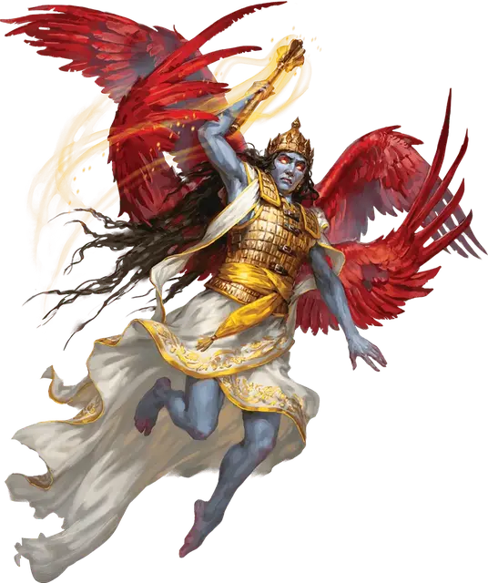

Пери
Pari
Средний Небожитель, обычно законно-добрый

Класс Доспеха 16 (кираса)
Хиты 180 (19к8 + 95)
Скорость 30 футов, летая 90 футов
| мод | спас | ||
|---|---|---|---|
| СИЛ | 20 | +5 | +5 |
| ЛОВ | 20 | +5 | +5 |
| ТЕЛ | 20 | +5 | +10 |
| мод | спас | ||
|---|---|---|---|
| ИНТ | 20 | +5 | +5 |
| МДР | 22 | +6 | +11 |
| ХАР | 22 | +6 | +11 |
Навыки Восприятие +11, Проницательность +16
Сопротивление урону излучение, огонь; дробящий, колющий, рубящий от немагических атак
Иммунитет к состояниям испуг, истощение, очарование
Чувства истинное зрение 120 футов, пассивное Восприятие 21
Языки Все, Телепатия 120 фт.
Опасность 13 (10000 опыта)
Бонус мастерства +5
Особенности
Сопротивление магии. Пери совершает с преимуществом спасброски от заклинаний и прочих магических эффектов.
Необычная природа. Пери не требует еды, питья или сна.
Действия
Мультиатака. Пери совершает три атаки Булавой.
Булава. . Рукопашная атака оружием: +10 к попаданию, досягаемость 5 футов, одна цель. Попадание: 8 (1к6 + 5) дробящего урона плюс 14 (4к6) урона излучением.
Дезориентирующее будущее. Пери пытается переполнить разум одного существа, которое она может видеть в пределах 60 футов от себя, видениями будущего. Цель должна преуспеть в спасброске Сл 19, иначе получит 27 (5к10) урона психической энергией и с помехой совершать броски атаки до начала следующего хода пери.
Использование заклинаний. Пери накладывает одно из следующих заклинаний, используя Харизму в качестве базовой характеристики (Сл спасброска от заклинаний 19):
• Неограниченно: обнаружение зла и добра [detect evil and good];
• 2/день каждое: лечение ран [cure wounds] (версия 6-го уровня), малое восстановление [lesser restoration];
• 1/день каждое: общение [commune] (накладывается действием), рассеивание зла и добра [dispel evil and good].
Описание
Пери - это ангельский предвестник, наделенный даром предвидения. Визит пери часто является пророческим предупреждением или предзнаменованием грядущего события. У пери пастельно-голубая кожа, они носят мантии и доспехи, а также имеют две пары крыльев с ярко-красными перьями, торчащими из спины.